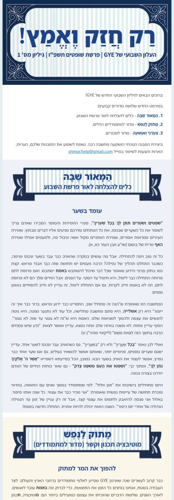
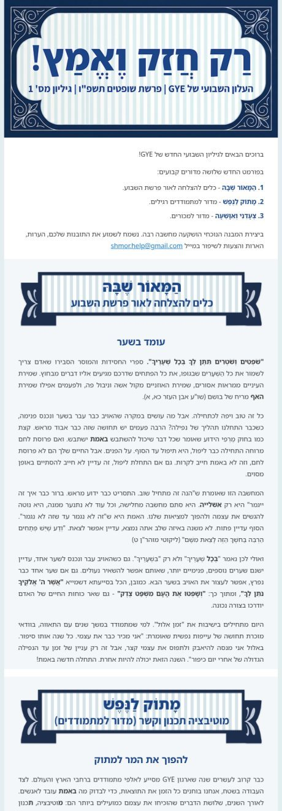
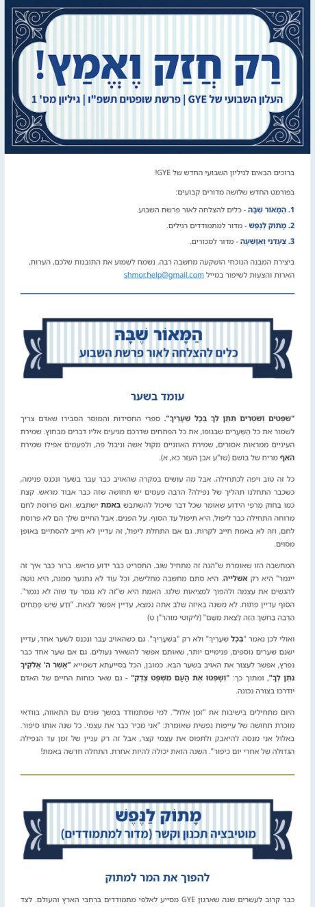

אותו גיליון שופטים, שלוש דרכים לסמן מעבר בין מדורים. התמונה היא ראש הגיליון עד תחילת המדור השני; הקישור מתחתיה פותח את המייל השלם.
שלושה גווני רקע: תכלת, דבש, טורקיז. ההפרדה הכי ברורה, אבל שלושה צבעים ברצף הם גם מה שנותן את התחושה הפחות רשמית.

המייל המלא ב׳אותו אפור־תכלת עדין בשלושת המדורים. עדיין ברור איפה מתחיל מדור, אבל הדף חוזר להיות בצבע אחד — נקי ומאופק יותר.

המייל המלא ה׳בלי שטח צבע בכלל. קו של 2 פיקסלים בצבע המדור מעל כל באנר, ורווח נדיב סביבו. זה הכיוון הרשמי מבין השלושה.

המייל המלא ו׳ההמלצה שלי: ו׳. ביקשת רשמי ומהוקצע — וזה בדיוק ההבדל בין שטח צבע לקו: הקו מסמן את המעבר בלי לצבוע את הטקסט. הבאנר ממילא כבר עושה את רוב עבודת ההפרדה. אם בכל זאת תרצה קצת צבע ברקע, ה׳ ולא ב׳.
הבאנרים כאן מתוקנים — בגרסה הקודמת הם נבנו בלי הגופנים העבריים ולכן יצאו לא קריאים.
דף האפשרויות הקודם (על מדור בודד, כולל מסגרת ואייקונים): section-styles